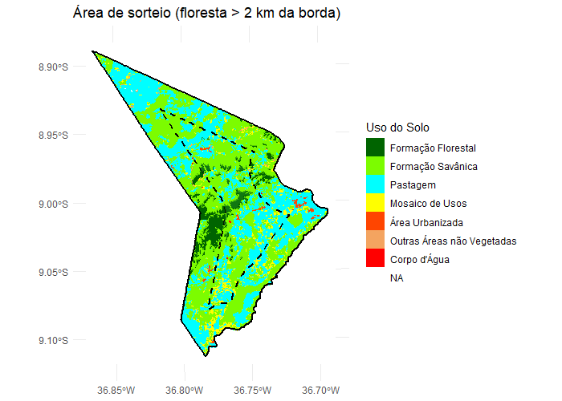
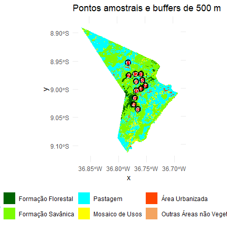
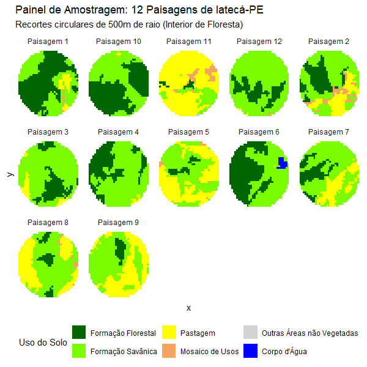

5º Exercício
Exercício Prático 5: Descrevendo uma paisagem
Exercício Prático: Consultoria Técnica para Criação de Unidades de Conservação (UCs)
O município escolhido foi Iatecá localizado no agreste pernambucano, é um local com um remanescente florestal ainda não caracterizado na literatura, além de áreas de pastagem e um povoado.

O município tem 252 km2 e uma população de 4.155 habitantes, a área também é considerada um distrito do município de Saloá, mas no MapBiomas é considerado separadamente.

Foram sorteados 12 pontos dentro da área, que é relativamente pequena. A área de amortecimento, ou buffers, foram definidas em um buffer circular de 500m de raio. Por ser uma área pequena, a impressão é que os buffers se sobrepõem, quando eles não sobrepõem.
| Buffer | Diversidade de Shannon | Floresta (%) | Densidade de Borda (m/ha) | AI (%) | NP | PD |
|---|---|---|---|---|---|---|
| 1 | 0.895 | 55.12 | 58.13 | 93.29 | 3 | 3.57 |
| 2 | 1.188 | 23.05 | 53.37 | 87.06 | 5 | 6.01 |
| 3 | 0.731 | 21.10 | 56.59 | 84.55 | 3 | 3.58 |
| 4 | 0.687 | 31.56 | 64.77 | 84.02 | 3 | 3.60 |
| 5 | 0.911 | 4.75 | 23.92 | 74.32 | 2 | 2.43 |
| 6 | 0.805 | 47.39 | 50.40 | 92.92 | 1 | 1.20 |
| 7 | 0.918 | 16.98 | 53.11 | 79.39 | 3 | 3.57 |
| 8 | 0.983 | 8.21 | 29.70 | 80.15 | 3 | 3.60 |
| 9 | 0.869 | 5.79 | 15.83 | 92.47 | 1 | 1.21 |
| 10 | 0.720 | 53.47 | 52.66 | 94.25 | 2 | 2.40 |
| 11 | 0.775 | 2.54 | 16.32 | 63.16 | 3 | 3.57 |
| 12 | 0.562 | 21.11 | 62.26 | 84.20 | 2 | 2.40 |
Os resultados mostram que os buffers apresentam diferentes níveis de cobertura florestal, diversidade da paisagem e fragmentação. Alguns locais possuem maior quantidade de floresta, enquanto outros são dominados por usos não florestais. A elevada densidade de borda observada em vários buffers indica que os remanescentes florestais são, em geral, fragmentados e sujeitos a efeitos de borda.
Os valores do Índice de Agregação (AI) indicam que, apesar da fragmentação observada, a floresta tende a ocorrer de forma relativamente agrupada na maior parte dos buffers. Os maiores valores de AI foram observados nos buffers 1, 6, 9 e 10, sugerindo maior conectividade e continuidade espacial da vegetação. Em contraste, o Buffer 11 apresentou o menor valor de AI, indicando uma distribuição mais dispersa dos remanescentes florestais.
As métricas de fragmentação (NP e PD) complementam essa interpretação. O Buffer 2 apresentou o maior número de fragmentos (NP = 5) e a maior densidade de fragmentos (PD = 6,01), caracterizando uma paisagem mais subdividida e heterogênea. Por outro lado, os Buffers 6 e 9 apresentaram apenas um fragmento florestal (NP = 1) e os menores valores de densidade de fragmentos, indicando maior continuidade da vegetação dentro da área analisada. Esse padrão é reforçado pelos elevados valores de AI observados nesses buffers.
A análise conjunta das métricas demonstra que a quantidade de floresta não é suficiente para descrever a estrutura da paisagem. Enquanto alguns buffers apresentam alta cobertura florestal associada a elevada agregação e baixo número de fragmentos, outros possuem menor cobertura, mas mantêm os remanescentes concentrados em poucas manchas. Dessa forma, a estrutura da paisagem varia entre os pontos amostrais, refletindo diferentes condições de conservação, conectividade e fragmentação dos habitats florestais.
